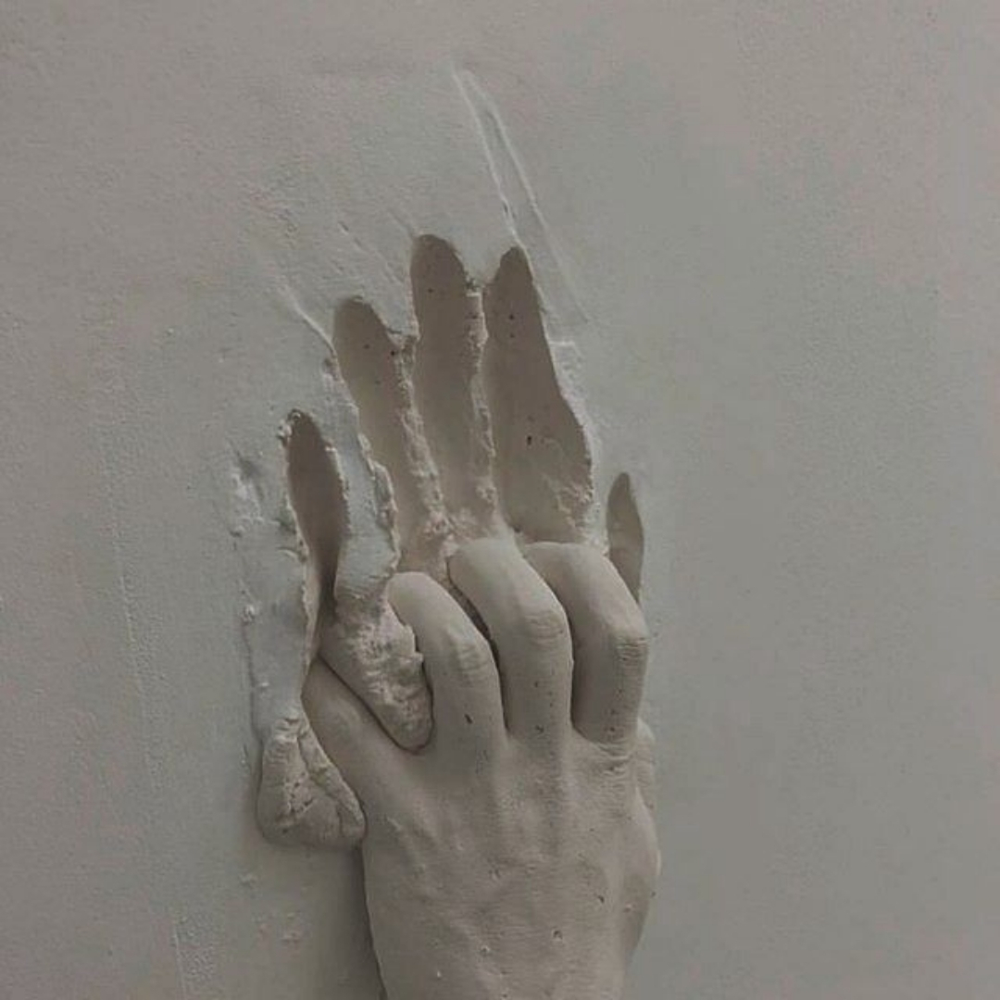

If you have ever re-taken an impression or re-scanned a prep, it was rarely about the tool. More often it was moisture control, retraction, or a finish line that was not captured cleanly. Both methods can produce excellent results when the fundamentals are right.
What actually drives accuracy
Regardless of method, fit depends on the same things: a clearly visible finish line free of blood, saliva, and soft tissue; adequate retraction so the margin is readable; complete capture of adjacent contacts and the opposing arch when occlusion is affected; and a bite record that reflects the intended relationship.
Where digital scanning shines
Intraoral scanning removes physical shipping, allows immediate review on screen, and lets clinicians re-capture a specific area without retaking the whole impression. It integrates naturally with CAD design, model-free workflows, and digital case submission. It is especially convenient for single units and short-span cases in a clean, well-isolated field, where the clinician can verify margins by zooming in before sign-off.
The caution: a scan that looks good at normal zoom can still hide a truncated margin. Review finish lines closely, particularly where they are subgingival.

Where conventional impressions still hold up
Physical impression materials remain a dependable choice in several situations: deep subgingival margins that are difficult to expose to a scanner, fields that are hard to keep dry where fluids interfere with optical capture, and certain long-span or full-arch situations where verification protocols are important.
A well-managed conventional impression with proper retraction and material handling can capture detail predictably. The tradeoffs are pour accuracy, disinfection, shipping time, and the risk of distortion if removal or handling is rushed.
Case selection: a practical lens
- Can I isolate and dry this field well enough for optical capture?
- Is the margin exposed and readable, or deeply subgingival?
- Is this a single unit, a short span, or a complex full-arch reconstruction?
- Does my lab have a preferred verification workflow for this case type?
Matching the method to the answer prevents most re-takes.
Sending it to the lab either way
Whichever method you choose, completeness is what the technician needs: margins and interproximal contacts captured without artifacts; opposing and adjacent teeth included when occlusion or contacts are involved; a written prescription with tooth number, material, shade, and occlusal intent; and photographs and shade information for esthetic cases. When in doubt, a quick conversation before design begins saves far more time than adjusting the restoration chairside later.
Note: This article summarizes general workflow concepts for dental professionals. Materials, scanners, and clinical situations vary; always follow manufacturer IFU and your clinical training.